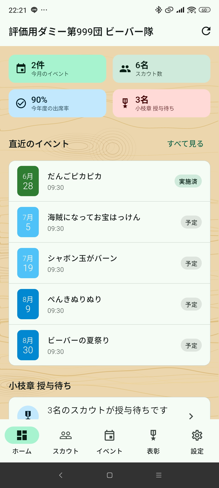
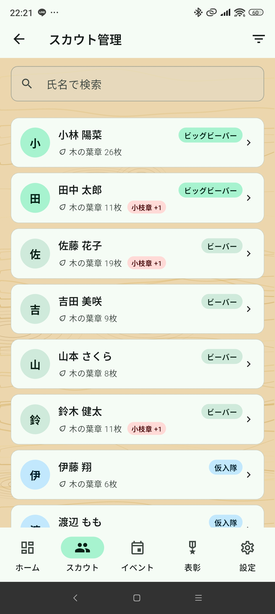
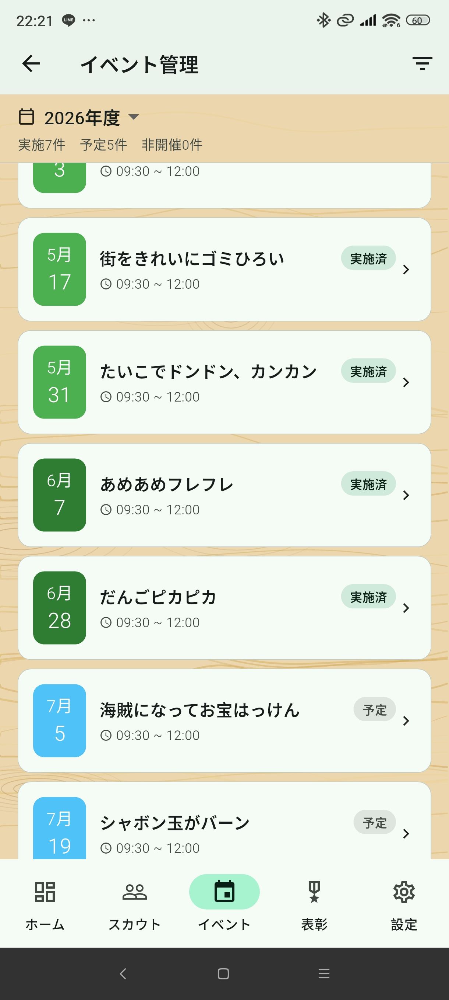
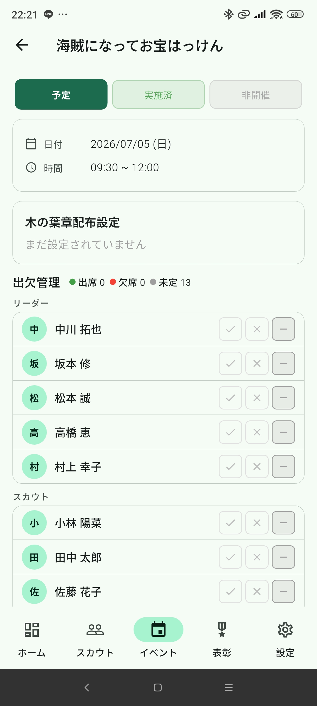
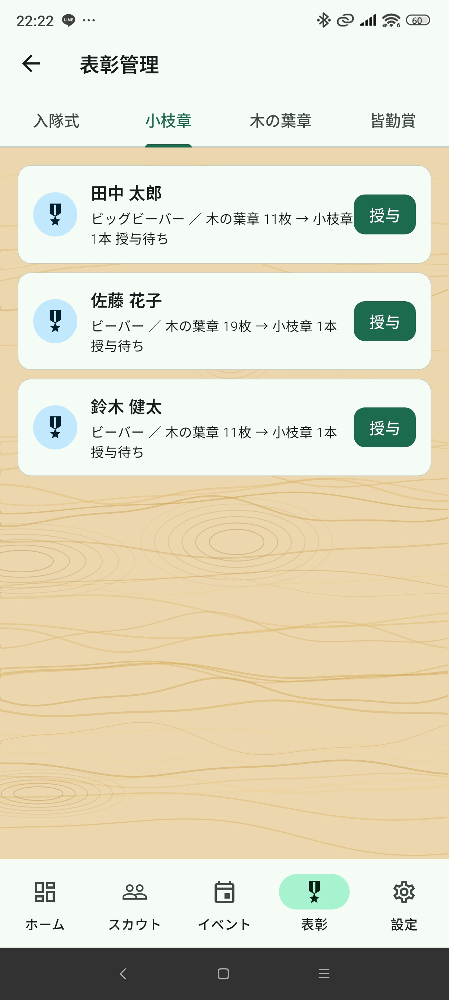

概要
制限ユーザー（limited）は保護者・団委員など、閲覧と出欠入力を主な目的とするユーザー向けのロールです。
⚠️ このロールでできないこと
- スカウト・リーダー・保護者・団委員の追加・編集・削除
- イベントの追加・編集・削除
- イベントステータスの変更（予定→確定など）
- 木の葉章配布設定の変更
- 小枝章の授与
- 保護者の紐付け操作
出欠ステータス（出席・欠席・未定）の変更は行えます。
ホーム（ダッシュボード）

アプリ起動時に表示されるトップ画面です。以下の情報を確認できます。
- 今月のイベント数・スカウト数・平均出席率・小枝章授与待ち数
- 直近2ヶ月のイベント一覧
- 今月誕生日のスカウト
イベント追加ボタン（＋）は表示されません。
スカウト（閲覧のみ）

スカウトの情報を閲覧できます。
- 氏名検索・分類フィルタで絞り込み可能
- スカウト詳細（基本情報・木の葉章・アレルギー情報）を確認可能
スカウトの追加・編集・削除ボタンは表示されません。
イベント（出欠入力のみ）

イベントの情報を確認し、出欠ステータスを変更できます。
出欠ステータスを変更する
- イベント一覧から対象のイベントをタップ
- 出欠管理セクションで自分（または担当スカウト）の行を確認
- アイコンをタップして 出席（✓）・欠席（×）・未定（—） を切り替え

イベントの追加・編集・削除、ステータス変更（確定・非開催）、木の葉章配布設定の変更はできません。
ステータスの見方
| ステータス | 説明 |
|---|---|
| 予定 | 開催予定のイベント |
| 確定 | 実施済み。木の葉章が反映されています |
| 非開催 | 中止・延期になったイベント |
表彰（閲覧のみ）

スカウトの表彰状況を確認できます。
- 入隊タブ：入隊日未入力のスカウト一覧
- 小枝章タブ：小枝章授与待ちのスカウト一覧
- 木の葉章タブ：木の葉章の取得枚数・進捗
- 皆勤賞タブ：年度ごとの皆勤賞該当スカウト
小枝章の授与操作はできません。
設定
設定画面の上部に団名・ログインユーザー名・ロールバッジが表示されます。ログアウトは右上のアイコンボタンから行います。
利用できる設定メニュー
| メニュー | 内容 |
|---|---|
| 団情報 | 団名・場所・連絡先の確認（編集不可） |
| リーダー | リーダー一覧の確認（編集不可） |
| 保護者 | 保護者一覧の確認（編集不可） |
| 団委員ほか | 団委員等の確認（編集不可） |
| 電話帳 | 全員の連絡先一覧（電話・メール起動可） |
| アレルギー情報 | アレルギーのあるスカウトのサマリー |
| アカウントを削除する | 自分のアカウントを削除 |
電話帳では電話・メールボタンでそれぞれのアプリを起動して連絡できます。